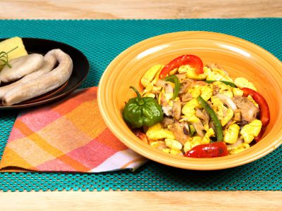

Ackee and Saltfish

Description
When we lived in Kingston, my favourite time for making ackee and saltfish were Saturday mornings after the weekly Coronation market trip. We would have what I dubbed “Market Breakfast” which basically was whatever I’d bought that morning that was the best of the best. It was always a delight when ackee was in season.
In my ackee and saltfish I always put:
onions and garlic (almost no dish starts in my house without that);
escallion (or green onions) and thyme;
scotch bonnet pepper and pimento (Jamaican allspice)
https://amazingackee.com/ackee-saltfish-recipe/
Ingredients
- Ackee
- Saltfish
- onions
- escallion
- scotch bonnet pepper
- thyme
- pimento
Steps
- Wash salt fish and put to boil in enough water to cover. Pour off the salty water, cover with tap water and allow to cool. Flake the fish and discard the bones.
- Heat Grace Vegetable Oil in a skillet over medium heat and use to saute the chopped onion, garlic, escallion, scotch bonnet pepper and the diced tomatoes for about three minutes.
- Add the flaked codfish and black pepper and mix well.
- Fold in the drained ackee and allow to simmer for 3 - 4 minutes.
- Serve with boiled green banana, slices of yam, fried dumplings or bammy or bread and slices of tomatoes.